Basic principles
This document introduces the basic principles of color mixing in terms of 8 aspects: color mixing, light and color, three primary colors of light, three primary colors of objects, secondary colors, tertiary colors, complementary colors, and metamerism.
What is color mixing?
-
It refers to the mixing of two or more kinds of color masterbatch paint together in the required paint amount to get the same color as the target vehicle.
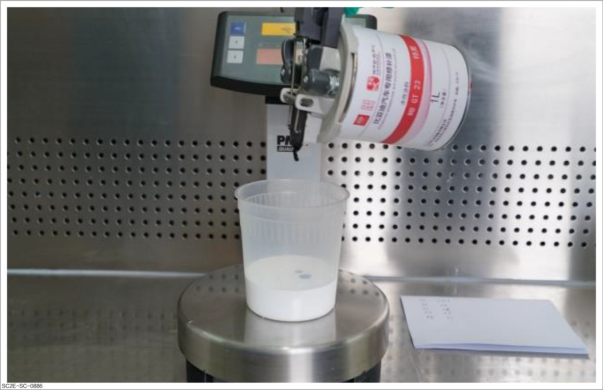
Light and color
-
Light composition: Although the sunlight looks white, it can be found that white light is actually composed of red, orange, yellow, blue, green, and bluish violet through prism decomposition.
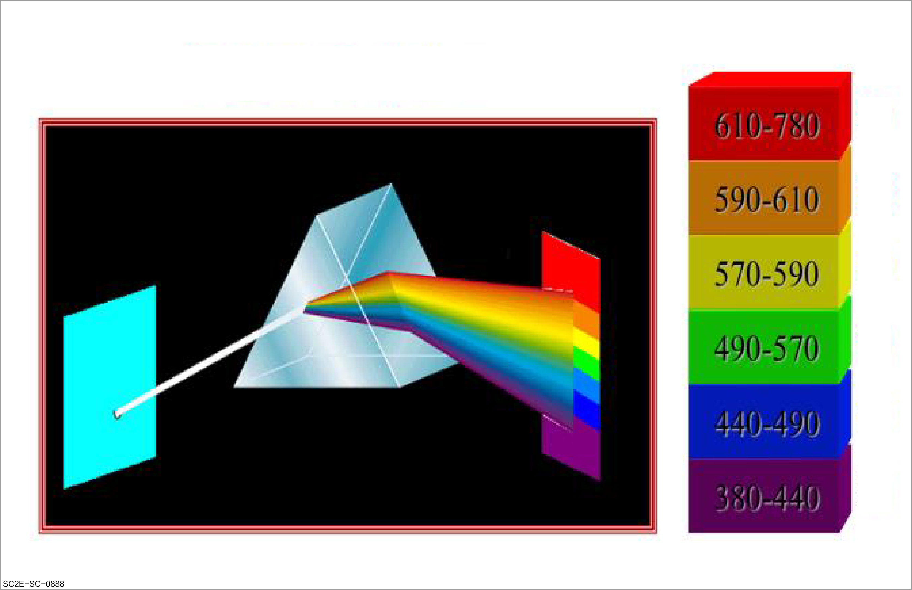
-
Color identification: Color shall be identified in the presence of a light source. When the light reflected by the object enters the observer's eyes, it stimulates the retina and forms a signal. When the signal is transmitted to the brain visually, the observer can see the color.
-
A: Light source
-
B: Color
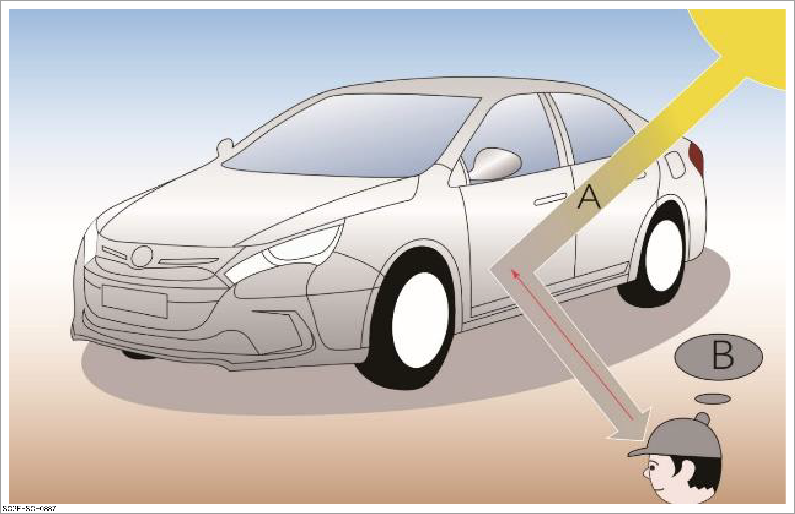
-
-
Attributes of color include hue, lightness, and saturation.
-
Hue: It refers to the basic type of color or the position of color on the color wheel. In short, it is called "color name", such as red, blue, or green.
Reminder
If the color of the paint is not correct during color mixing, it means that the hue is incorrect.
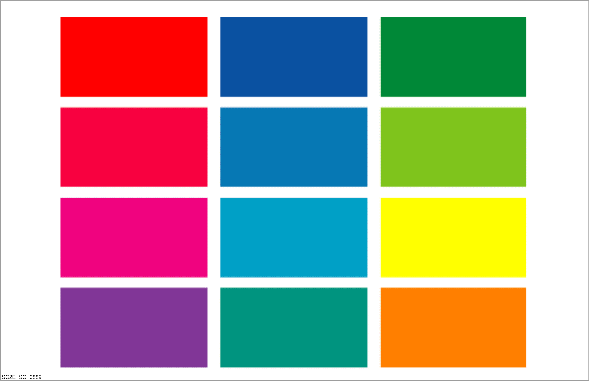
-
Lightness: It refers to the relative brightness or darkness of a color, which is a measure of the brightness and darkness of the color. Colors with higher lightness appear brighter, while colors with lower lightness appear darker. The change of lightness is independent of hue and saturation, which can be imagined as changing the brightness of color by increasing or decreasing the intensity of a light source.
ReminderIf the color of the paint is too dark during color mixing, it means that the lightness is incorrect.
-
A: High lightness
-
B: Low lightness
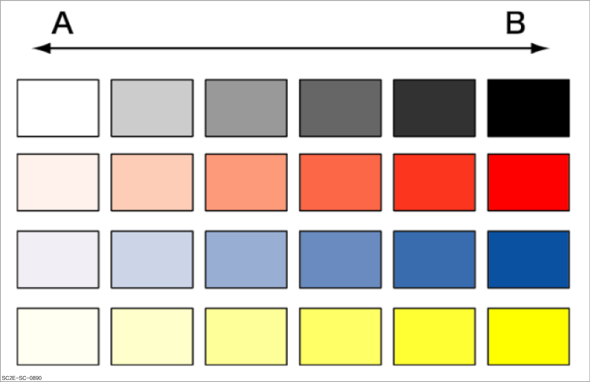
-
-
Saturation: It describes the purity or intensity of a color, i.e. vividness of the color. Colors with high saturation are more vivid and close to pure colors in the spectrum, while colors with low saturation are dark, pale, or gray, close to gray.
ReminderIf the color of the paint is too vivid or dull during color mixing, it means that the saturation is incorrect.
-
A: High saturation
-
B: Low saturation
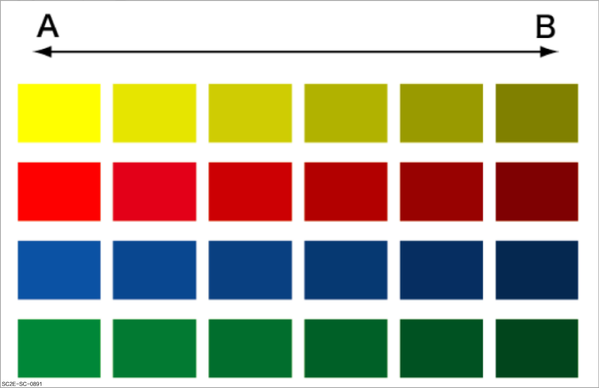
-
-
-
Relationship between light and color: The color of an object under sunlight is considered as a standard color, and the corresponding wavelength distribution is also different when the light source is different; therefore, the effect of the same color under different light sources may also be slightly different.
ReminderUse the correct light source for comparison during color mixing.
-
A Sunlight: It carries almost uniform light in the complete wavelength range.
-
B Incandescent light: Compared with sunlight (A), it contains a large amount of light in the long wave range, so the effect of red is stronger.
-
C Fluorescent lamp: Compared with sunlight (A), it contains less light in the long wave range, so the effect of blue is stronger.
-
D: Distribution
-
E: Wavelength
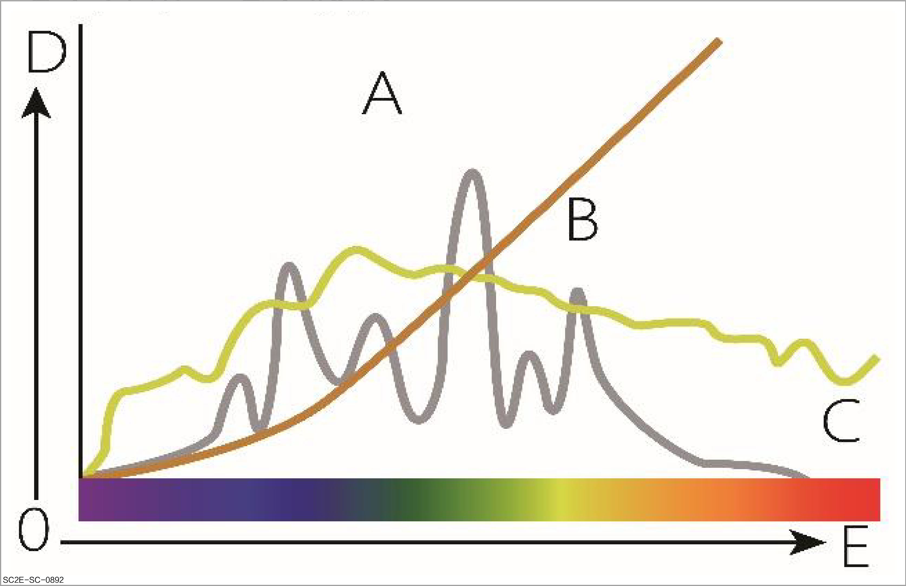
-
Three primary colors of light
-
The three primary colors of light are red, green, and blue, commonly referred to as RGB. The three lights are mixed in different proportions to form almost all the colors that human vision can perceive. In the color mixing model, mixing red, green, and blue lights in equal amounts produces white light, because the three lights contain a major part of the spectral range that can be responded to by three cone cells of human eyes.
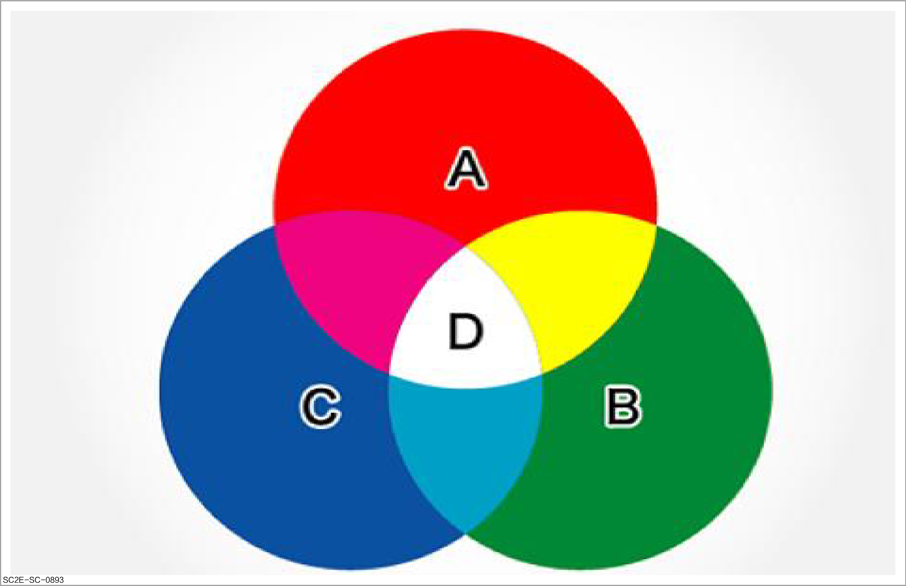
Three primary colors of object
-
For colored materials such as paint, red, yellow and blue can be mixed properly to obtain most or even all colors. These three colors are called "three primary colors of object". Mixing equal proportions of the three primary colors results in black.
ReminderThis principle is used in color mixing.
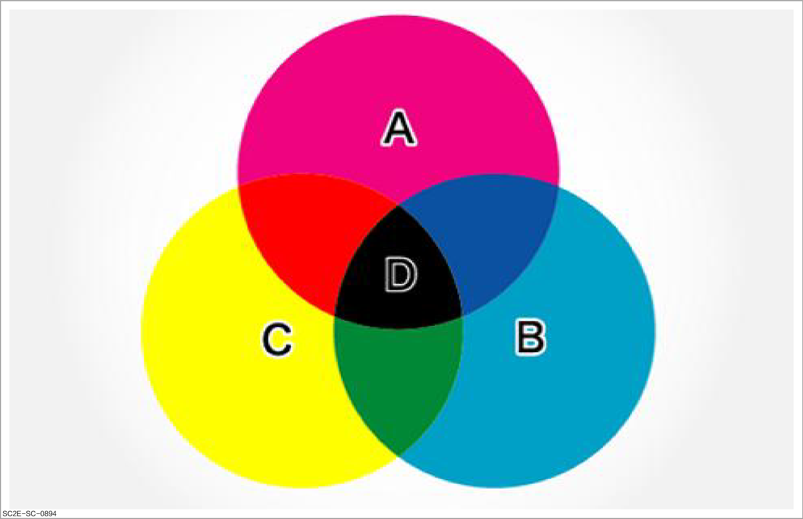
Secondary colors
-
A secondary color is a mixture of two adjacent primary colors. A second-order color as a result of the combination of two primary colors is called a "secondary color".
ReminderDuring color mixing, secondary colors are obtained from combinations of any two of the three primary colors: orange (red + yellow), purple (red + blue), and green (yellow + blue).
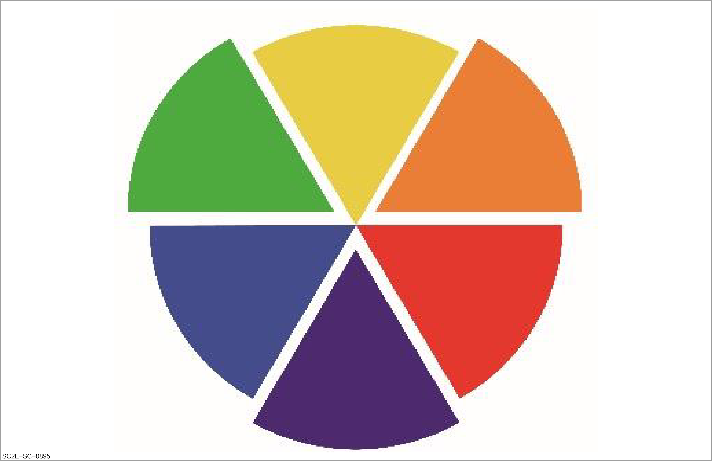
Tertiary colors
-
The combination of a primary color and a secondary color or of two secondary colors yields tertiary colors. Depending on the color mixing ratio, the result may be more red, blue or yellow.
-
A tertiary color contains all the elements of the three primary colors. Therefore, all the tertiary colors are broken colors with reduced purity and saturation.
ReminderThe tertiary colors contain a large number of brown hues. Human eyes can distinguish more than 100,000 colors. In fact, among the colors of automotive paint repair, tertiary colors are the most commonly used.
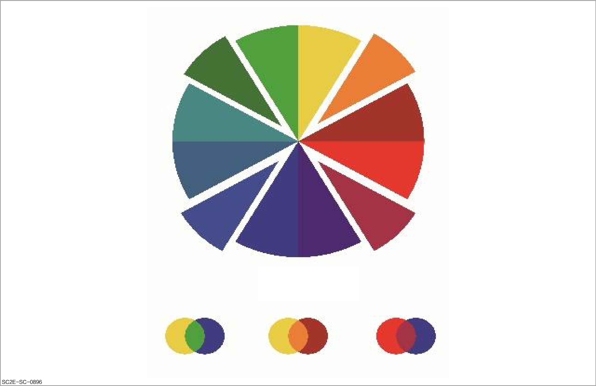
Complementary colors
-
Colors opposite each other on the color wheel are called complementary colors.
-
Mixing a pair of complementary colors will form black. For example, magenta complements green. Mixing pure green with pure red will get black color.
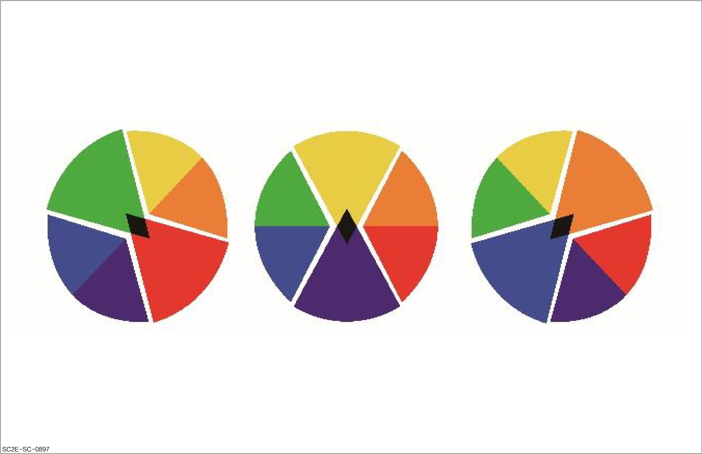
Metamerism
-
Phenomenon:
-
The color of an object will change with the light source.
-
If two objects are considered to exhibit the same color under one light source, but exhibit completely different colors under another light source, this phenomenon is called "metamerism". For example, they appear to be the same color in sunlight, but different under incandescent light.
-
-
Cause: Mixing different pigments rather than ideally identical ones (For example: green pigment versus mixture of blue and yellow pigments).
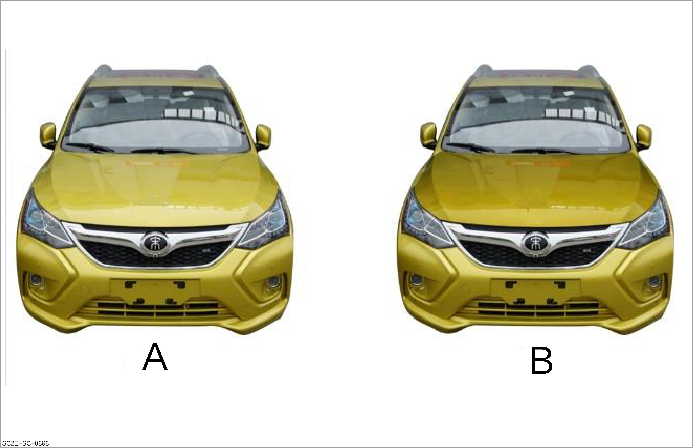
-
Preventive measures: Compare the painting color plate and OEM standard plate in the light source color change chamber with D65 daylight, incandescent light, and sodium light, and observe them from different angles when comparing.
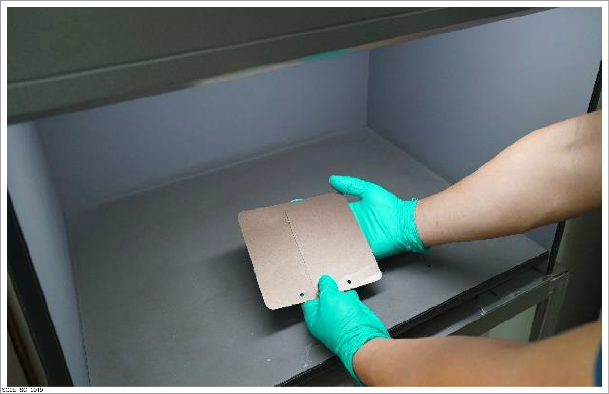